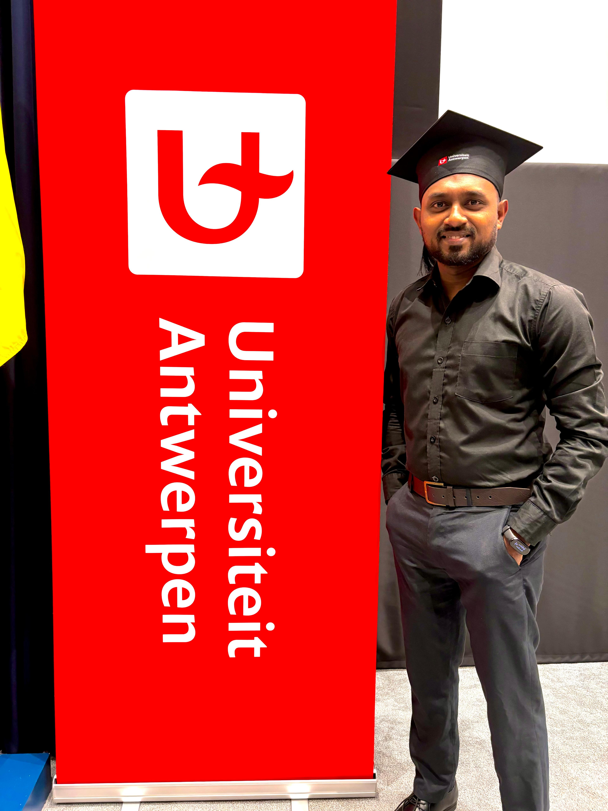

About Me
I'm Nuwan Rankiralage, an Erasmus Mundus graduate in Applied Ecohydrology with a passion for sustainable water management and nature-based solutions. I specialize in water technology, water quality, hydrological modeling, and environmental research.
Education
I earned my Master’s in Applied Ecohydrology through the Erasmus Mundus program, studying at:
- University of Algarve, Portugal
- University of Lodz, Poland
- Technische Hochschule Lübeck, Germany
- University of Antwerp, Belgium
Experience

Field work during my master’s in river basin monitoring and ecosystem assessment.

Water quality sampling and ecohydrological fieldwork across Europe.

Laboratory analysis focusing on PFAS contamination in wastewater treatment systems.
I also worked as:
- Research Assistant – Department of Limnology and Water Technology, University of Ruhuna
- Teaching Assistant – University of Ruhuna
- Intern – European Centre of Ecohydrology, Poland
- Master Thesis – BioWave Research Group, University of Antwerp
Research & Projects
I have worked on several projects related to ecohydrology, including my thesis on the fate of PFAS in wastewater treatment systems. My academic journey through four European universities gave me hands-on experience with hydrological modeling, GIS, and nature-based water treatment systems.
Curriculum Vitae
You can view and download my CV here:
Download CVContact
Feel free to connect with me on LinkedIn.